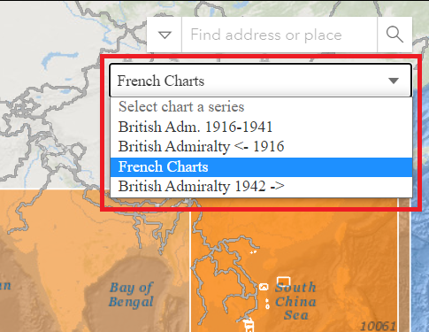
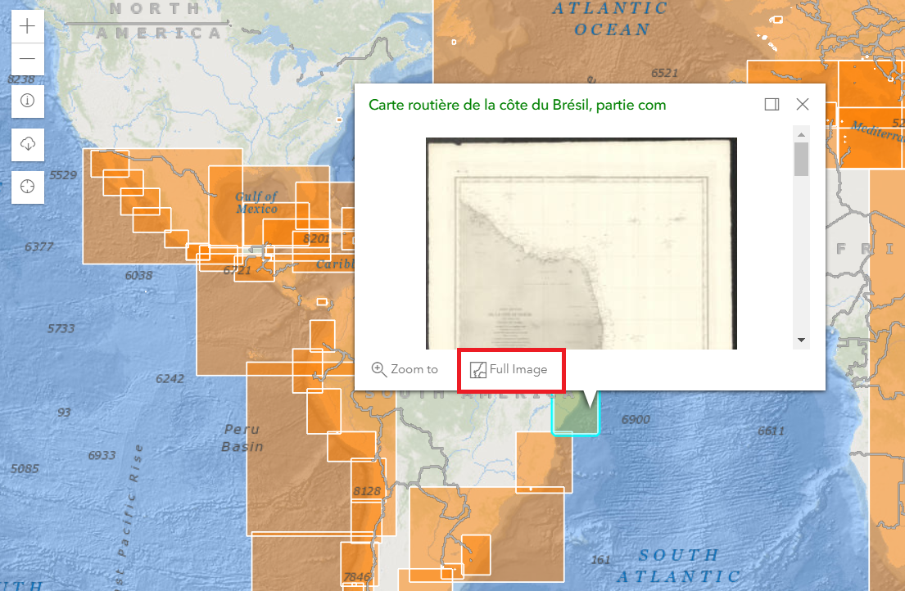
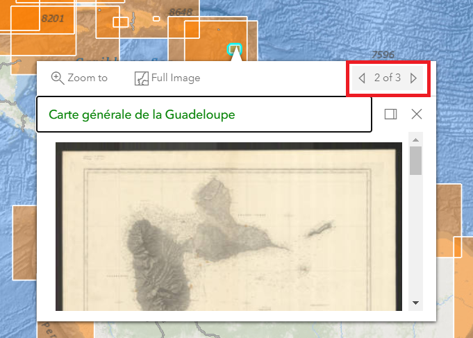
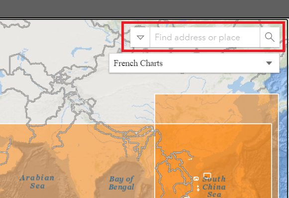
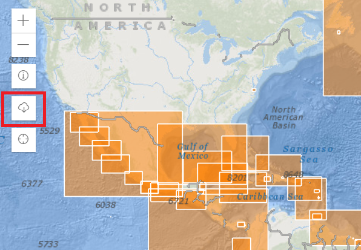

About this Application
This application is a discovery aid for rare international nautical charts from the 19th and early 20th centuries. The printed Nautical Chart collection at the American Geographical Society Library contains a variety of nautical charts from around the world. Nautical charts are not only valuable in the water navigation information they provide, they also tend to provide information about city location, street layout, building locations, and other historic information.
This app will continue to be updated as the collection is digitized and processed. The project is an early use case of the
OpenIndexMaps schema.
Questions about this application, the collection, or the American Geographical Society Library at UW-Milwaukee should be directed to agsl@uwm.edu. Check out other
AGSL Discovery Applications and the
AGSL Homepage.
Using this Application

First select a chart series of interest from the dropdown menu, by default the application displays 'French Charts.' Pan and zoom
around the map to locate charts in an area of interest. Clicking on any chart will reveal information about each chart. Use the
Full Image button in the popup to display a high-resoltion, zoomable image of the select chart.

In the event that there are overlapping charts or charts that cover the same geographic extent, use the forward and back arrows in the popup to cycle through the selected charts.

You can also use the
Search bar to locate any chart by geographic location or its 'Title' or 'label.'

Download Data

You can use the download data button to select and download an entire chart series in either GeoJSON or CSV format. First select
a chart series and then select the data type and click the
Download button.
Credits
Application Developer:
Bob Cowling